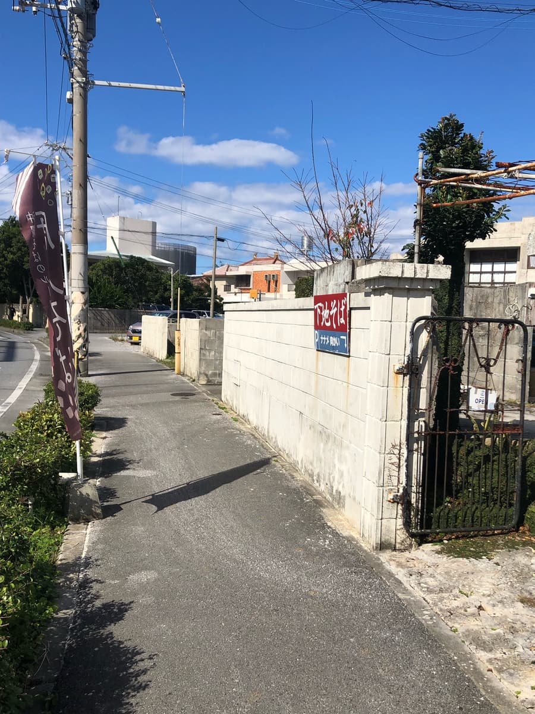
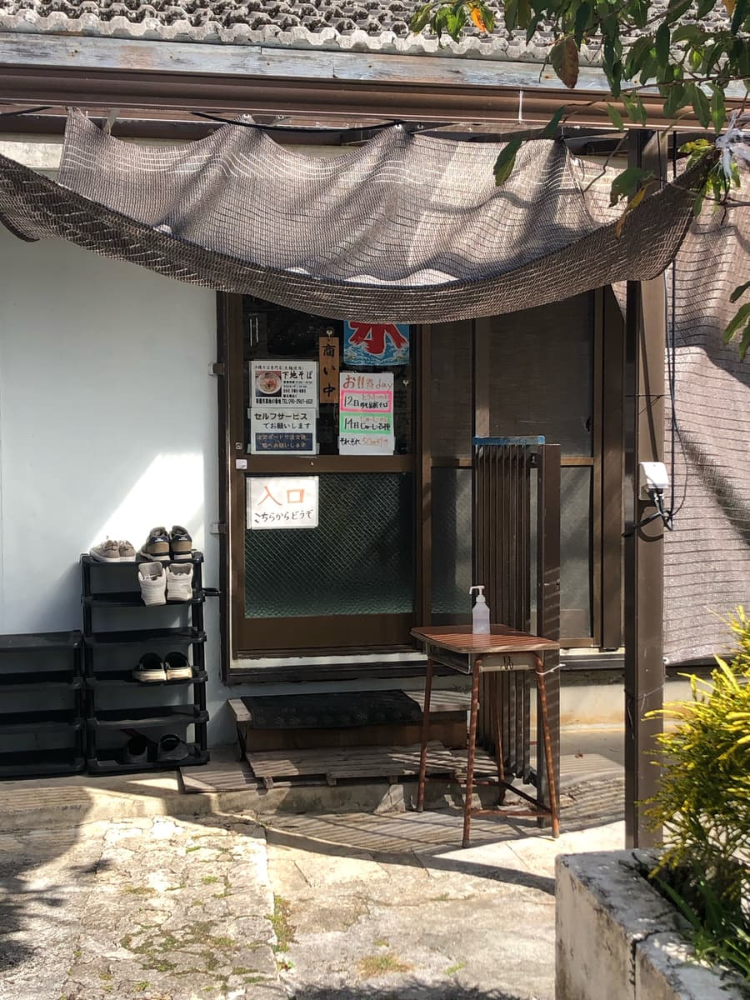
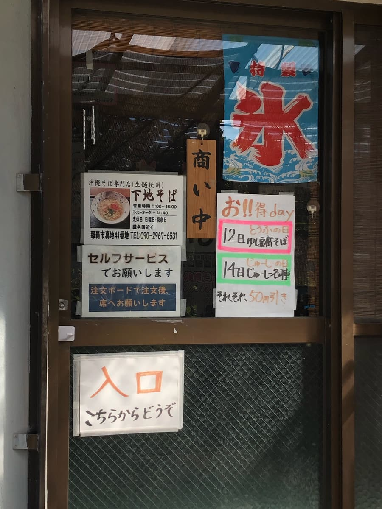
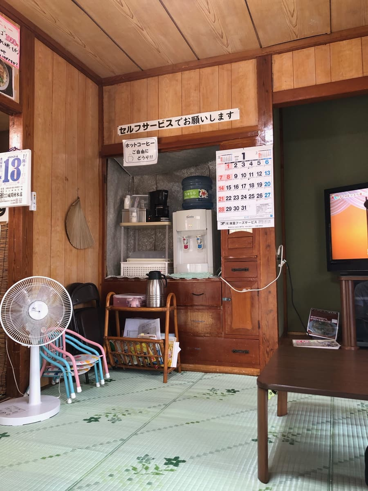
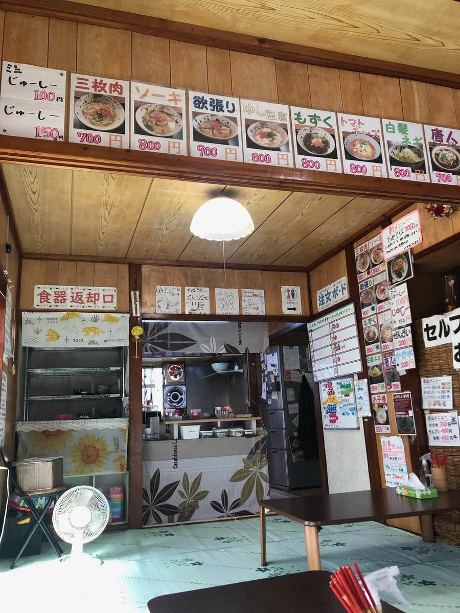
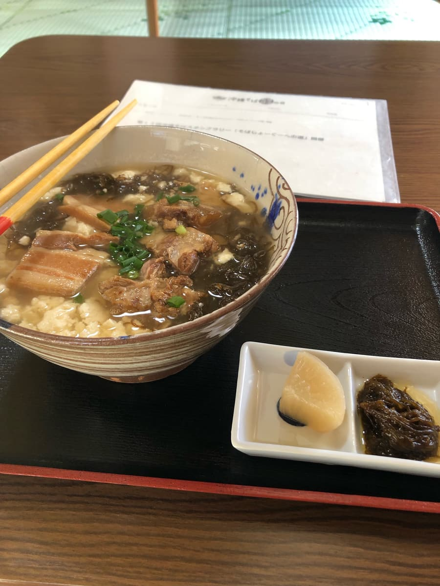
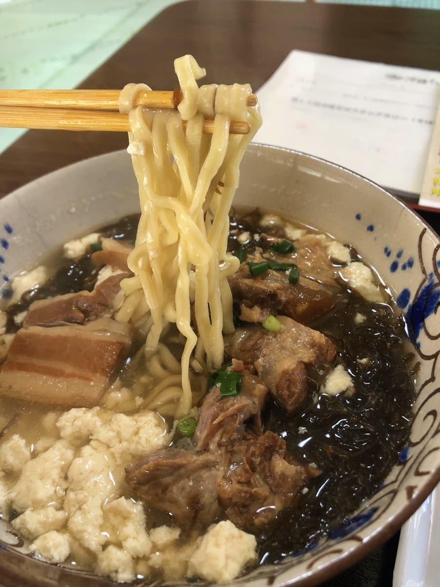

2024.1に食べました。こちらのお店は「第13回沖縄そばスタンプラリー（2023.10.1～2024.2.29）」の参加店で、33店舗目/34店舗として行きました😊コツコツスタンプラリー食べ歩いてやっとここまで来ました😆



店内に入ると昔のおばあのお家な雰囲気😆 懐かしいですね笑


こちらのお店、初めてなので、システムが分からなかったですが、食券機はなく、とりあえずスタンプラリー冊子で紹介されていた「下地そば」を注文しようと思っていたので、「下地そばお願いします」と伝えたところ、「ホワイトボードの4番のところにマグネット置いて」と言われ、4番にマグネットを。写真のホワイトボード4番の注文は私です😆
そばメニューに番号が振られているようです。壁に貼られた写真付きメニューに番号が書かれていたのか気づかなかったです(^0^;)
麺は生麺を使用しているようで、茹でるのに時間がかかっているのか、少し来るまでに時間かかった印象です。

「下地そば」は、壁に貼られたメニューにも書いてありましたが、三枚肉、軟骨ソーキ、ゆし豆腐、もずくが乗ったいわゆる「全部のせ」ですね。
「全部のせ」メニューは「オススメにも引けを取らない」で紹介している名護市の「二見そば」さんを思い出しました😆
まずはスープを味わいます。ゆし豆腐のお汁も混じっているのか、出汁ベースが分かりにくかったですが、あっさりした少し豚骨ベースの味に感じましたが、薄い感じですね。

次に麺を頂きます。細麺タイプで、生麺だけあってもちもち感はありますね。次に具を頂きましたが、三枚肉、軟骨ソーキは小さめな感じで味もこちらも薄いあっさりした感じです。ゆし豆腐、もずく含めて全体的にあっさり系です。
評価（9点/15点）：普通な感じです。建物は沖縄の昔のおばあのお家のような古民家で雰囲気は沖縄ぽいので観光でこの辺に来た際に如何でしょうか？
麺 ：★★★☆☆（3）
スープ：★★★☆☆（3）
具 ：★★★☆☆（3）